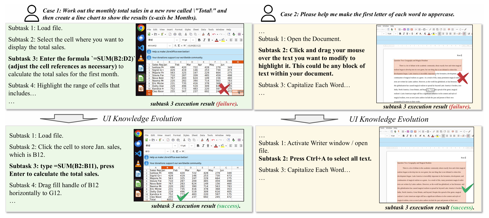
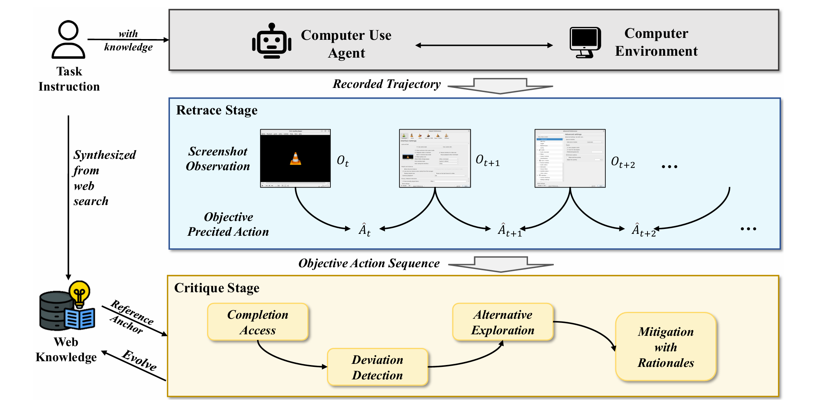
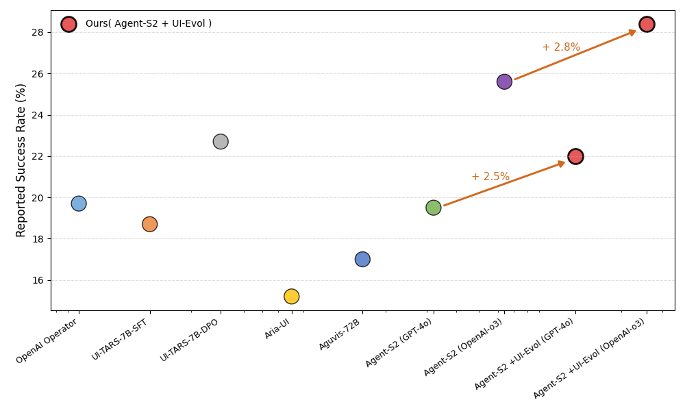

UI-Evol: Automatic Knowledge Evolving for Computer Use Agents
UI-Evol is a plug-and-play module that bridges the knowledge-execution gap in computer use agents through autonomous GUI knowledge evolution. Our approach demonstrates significant improvements in both success rate and stability on the OSWorld benchmark.
Motivation

Figure 1: The green box shows web-retrieved task knowledge, while the yellow box shows evolved knowledge from our approach. Web knowledge is generally correct but often lacks practical details (left) or suggests more complex manipulations (right).
Our analysis reveals that even when 90% of retrieved knowledge is deemed "correct" by humans, the agent success rate reaches only 41%, indicating a critical knowledge-execution gap in computer use agents.
Method Overview

Figure 2: UI-Evol consists of two stages: Retrace replays screenshots to recover objective actions; Critique uses web knowledge to detect deviations, explore alternatives, and output rationale-backed fixes that are fed back into the knowledge base.
Results
Performance comparison on OSWorld benchmark with Agent S2 backbone

Figure 3: Performance (%) of original web knowledge versus UI-Evol-refined knowledge across different backbone models on five task groups.
Key observations from the results:
- UI-Evol achieves 28.4% average success rate compared to 25.6% baseline with OpenAI-o3
- Variance reduction from 1.20 to 0.07 demonstrates significant stability improvement
- Consistent performance gains across OS, Daily, Office, Professional, and Workflow tasks
Contributions
- We identify the gap between externally acquired knowledge and real task execution, and propose UI-Evol, a plug-and-play module that effectively bridges this gap by autonomously evolving GUI task knowledge.
- We are the first to systematically identify and analyze the previously overlooked instability issue in contemporary computer use agents, and develop a highly parallelized environment to facilitate efficient investigation.
- Comprehensive experiments on the OSWorld benchmark show UI-Evol achieves state-of-the-art accuracy and significantly reduces behavioral standard deviation, substantially enhancing agent robustness and stability.
Citation
If you find this work useful, please consider citing:
@misc{zhang2025uievolautomaticknowledgeevolving,
title={UI-Evol: Automatic Knowledge Evolving for Computer Use Agents},
author={Ziyun Zhang and Xinyi Liu and Xiaoyi Zhang and Jun Wang and Gang Chen and Yan Lu},
year={2025},
eprint={2505.21964},
archivePrefix={arXiv},
primaryClass={cs.HC},
url={https://arxiv.org/abs/2505.21964}
}